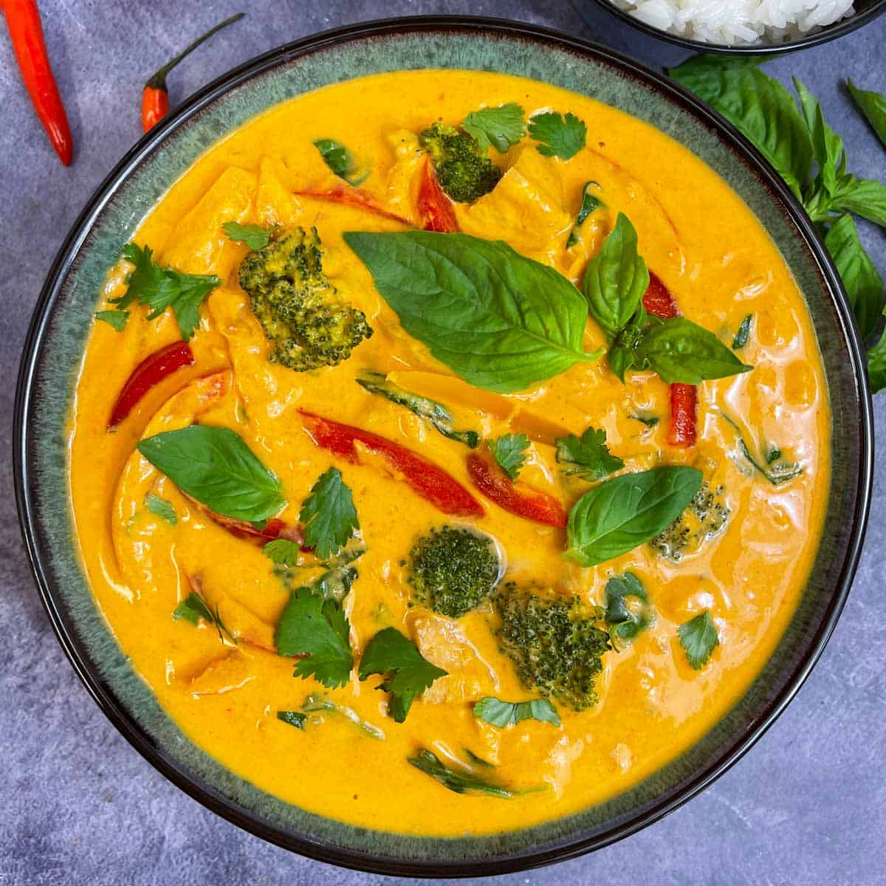

Panang Curry with Chicken

Panang curry with chicken represents the diversity of Thailand's southern region. Panang refers to the island of Penang in Northern Malaysia bordering
southern Thailand. Use 4 tablespoons curry paste from a fresh curry paste recipe or 5 tablespoons pre-made curry paste if time does not permit making
your own paste
Ingredients
- 5 tablespoons Panang curry paste
- 1 tablespoon cooking oil
- 4 cups coconut milk
- ⅔ pound skinless, boneless chicken breast, cubed
- 2 tablespoons palm sugar
- 2 tablespoons fish sauce, or to taste
- 6 makrut lime leaves, torn in half
- 2 fresh red chile peppers, sliced
- ¼ cup fresh Thai basil leaves
Steps
- Fry curry paste in oil in a large skillet or wok over medium heat until fragrant. Stir in coconut milk and bring to a boil. Add chicken; cook and
stir
until chicken is nearly cooked through, 10 to 15 minutes.
- Stir palm sugar, fish sauce, and lime leaves into mixture; simmer for 5 minutes. Taste and adjust saltiness by adding more fish sauce if necessary.
Garnish with sliced red chile peppers and Thai basil leaves.
Back To Recipes List